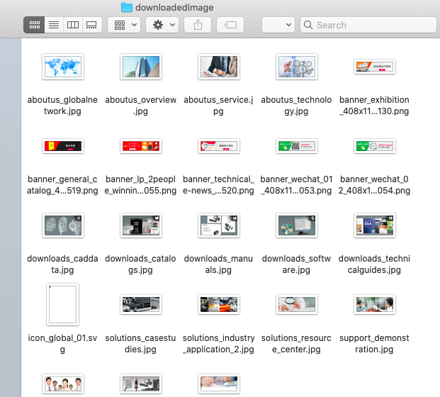

Colly爬取图片的示例
在开始我们的项目之前，我们先来看一个使用colly爬取图片的例子
代码改编自https://www.jianshu.com/p/cda08dde65cd
package main
import (
"fmt"
"github.com/gocolly/colly"
"io"
"net/http"
"os"
"strings"
)
// global variables
var destUrl string
// helper function to download images
func downloadImages(_ int, e *colly.HTMLElement) {
srcRef := e.Attr("src")
fullurl := destUrl + srcRef
res, _ := http.Get(fullurl)
h := strings.Split(srcRef, "/")
savedPath := "./downloadedImage/" + h[len(h)-1]
f, err := os.Create(savedPath)
if(err != nil) {
panic(err)
} // if
io.Copy(f, res.Body)
fmt.Println(destUrl + srcRef)
} // downloadImages
// main function
func main() {
c := colly.NewCollector()
// 创建一个文件夹用于存放下载的图像
os.Mkdir("./downloadedImage/", 0777)
c.OnHTML("ul[class]", func(e *colly.HTMLElement) {
e.ForEach("img[src]", downloadImages)
})
c.OnRequest(func(r *colly.Request) {
fmt.Println("Visiting", r.URL)
})
destUrl = "https://www.keyence.com.cn"
c.Visit(destUrl)
} // main
结果展示
